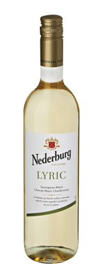
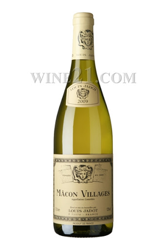
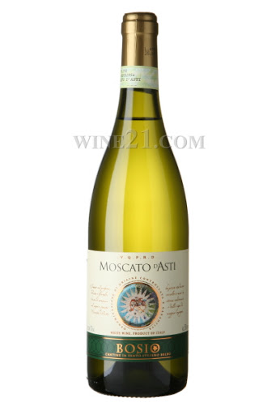

가성비 화이트 와인 추천
니더버그 리릭
남아프리카에서 생산된 화이트 와인 낮은 당도와 높은 산도를 지니며
생선요리에 잘어울린다 복숭아,살구,페퍼 맛과향을 느낄수잇다
마꽁 빌라쥐
프랑스에서 생산된 샤르도네 품종의 와인이며 레몬,꽃 향이 인상적이다
낮은당도와 높은산도 적은 탄닌을 가지고잇으며 12.5%의 알콜도수를 지니고잇다
모스카토 다스티
당도가 높은 화이트와인이다 이탈리아에서 생산되엇으며 모스카토 품종이다
낮은 산도와 높은 당도로 대중적인 스위트 와인이다